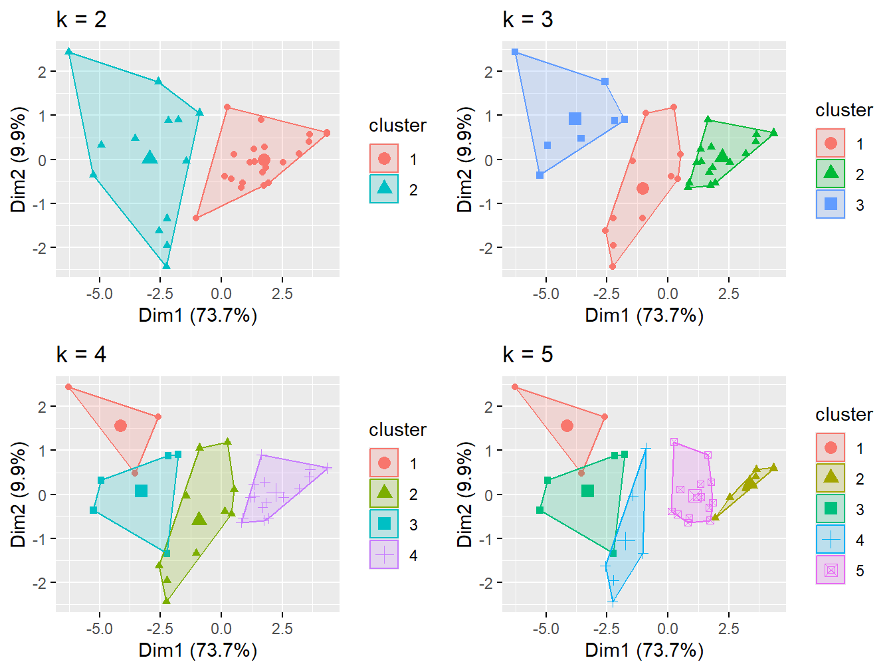
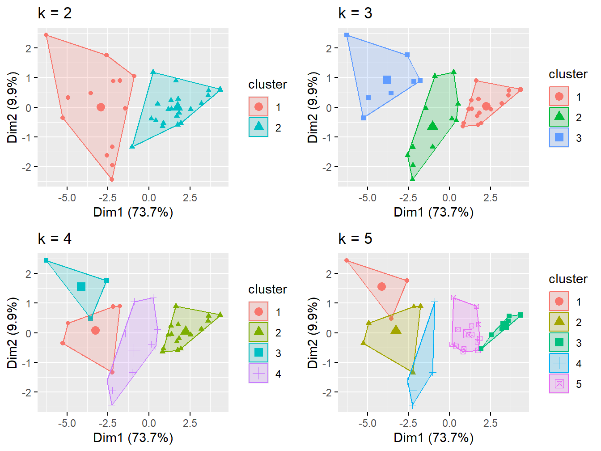
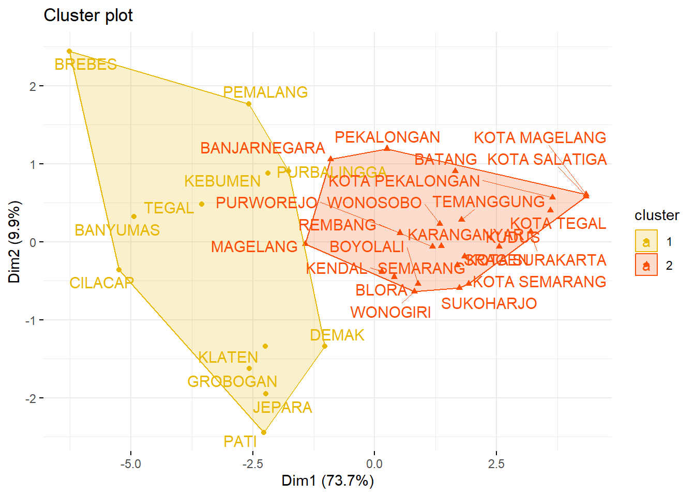

Buku ini sedang dalam tahap tinjauan terbuka. Kami ingin umpan balik Anda untuk membuat buku ini lebih baik bagi. Anda dapat memberikan anotasi pada beberapa teks dengan memilihnya menggunakan kursor dan kemudian klik “Beri Anotasi” pada menu pop-up. Anda juga dapat melihat anotasi orang lain: klik tanda panah di sudut kanan atas halaman
4 Metode Cluster Hirarki
library (readr)
urlfile = "https://raw.githubusercontent.com/dedenistiawan/Dataset/main/Basis%20Data%20Terpadu%20Jateng.csv"
data<-read.csv(url(urlfile), row.names = "Kabupaten")| X1 | X2 | X3 | X4 | X5 | X6 | X7 | X8 | X9 | X10 | |
|---|---|---|---|---|---|---|---|---|---|---|
| CILACAP | 5.19 | 5.67 | 5.08 | 5.44 | 5.22 | 6.05 | 11.47 | 9.78 | 5.55 | 5.12 |
| BANYUMAS | 5.71 | 4.47 | 5.18 | 5.51 | 5.02 | 6.21 | 7.39 | 6.96 | 5.98 | 8.22 |
| PURBALINGGA | 3.30 | 2.19 | 3.80 | 3.13 | 3.73 | 3.34 | 8.71 | 7.41 | 3.21 | 4.65 |
| BANJARNEGARA | 2.73 | 2.34 | 3.76 | 2.80 | 2.57 | 2.99 | 3.31 | 5.45 | 4.21 | 6.05 |
| KEBUMEN | 4.17 | 2.55 | 3.26 | 4.16 | 3.15 | 4.15 | 4.30 | 9.29 | 4.61 | 4.34 |
| PURWOREJO | 1.87 | 2.12 | 1.48 | 3.05 | 1.78 | 1.83 | 5.00 | 4.90 | 3.12 | 2.09 |
| WONOSOBO | 2.13 | 1.95 | 3.00 | 1.78 | 1.62 | 2.06 | 0.45 | 2.32 | 3.57 | 0.84 |
| MAGELANG | 3.95 | 3.01 | 4.22 | 4.15 | 3.01 | 3.64 | 1.44 | 3.35 | 5.69 | 3.67 |
| BOYOLALI | 2.19 | 3.07 | 1.61 | 2.74 | 2.11 | 1.82 | 1.71 | 2.34 | 3.41 | 1.55 |
| KLATEN | 3.84 | 5.15 | 1.93 | 4.64 | 4.04 | 3.78 | 8.71 | 4.45 | 3.99 | 3.09 |
# Compute the dissimilarity matrix
# df = the standardized data
res.dist <- dist(df, method = "euclidean")## CILACAP BANYUMAS PURBALINGGA BANJARNEGARA KEBUMEN
## CILACAP 0.000000 2.327193 3.828424 5.188508 3.891360
## BANYUMAS 2.327193 0.000000 3.809719 4.232529 3.310710
## PURBALINGGA 3.828424 3.809719 0.000000 2.418211 2.235801
## BANJARNEGARA 5.188508 4.232529 2.418211 0.000000 2.159694
## KEBUMEN 3.891360 3.310710 2.235801 2.159694 0.000000## Loading required package: ggplot2## Welcome! Want to learn more? See two factoextra-related books at https://goo.gl/ve3WBa
## CILACAP BANYUMAS
## 1 1## grp
## 1 2
## 12 23# Cut in 2 groups and color by groups
fviz_dend(res.hc, k =2, # Cut in four groups
cex = 0.5, # label size
k_colors = c("#E7B800", "#FC4E07"),
color_labels_by_k = TRUE, # color labels by groups
rect = TRUE # Add rectangle around groups)
)
fviz_cluster(list(data = df, cluster = grp),
palette = c("#E7B800", "#FC4E07"),
ellipse.type = "convex", # Concentration ellipse
repel = TRUE, # Avoid label overplotting (slow)
show.clust.cent = FALSE, ggtheme = theme_minimal())